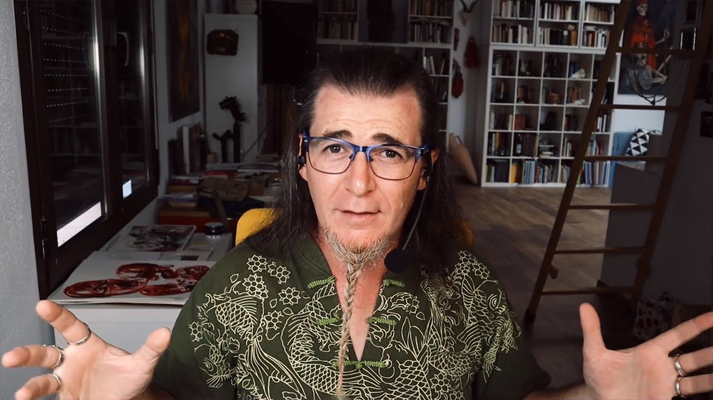
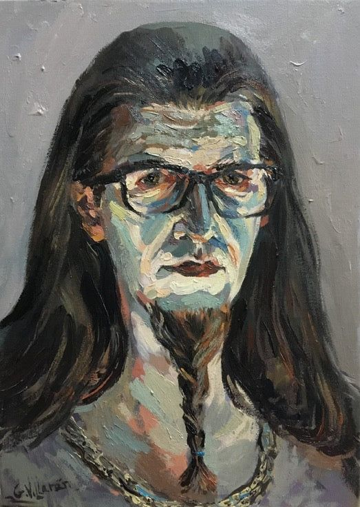

Punto de vista general:
Antonio García Villarán es un artista plástico y pensador contemporáneo cuya filosofía del arte se basa
en una reflexión crítica sobre los criterios estéticos vigentes y las formas en que se valora la producción
artística contemporánea. Para Villarán, el arte no debe desvincularse de la destreza técnica ni de la capacidad
de generar una experiencia estética profunda; rechaza las tendencias que priorizan el discurso, la especulación
de mercado o lo puramente conceptual por encima de la calidad formal y la emoción estética.
Esta visión se articula alrededor de su concepto de “hamparte”, término que acuñó para referirse a obras que no
poseen valor estético intrínseco, pero que, sin embargo, son elevadas al estatus de arte mediante estrategias de
mercado o discursos externos.

En su pensamiento, Villarán sostiene que el arte debe provocar una conexión auténtica con el espectador y
generar experiencia estética real, más allá de modas o etiquetas vacías. Critica fuertemente el elitismo y
la endogamia del mundo del arte tradicional, que según él, muchas veces favorece artistas no por la calidad
de su obra, sino por su posición social o mediática. Esta postura crítica se expresa tanto en sus
publicaciones como en sus vídeos de divulgación, donde cuestiona famosos movimientos y creadores cuando
considera que han sido sobrevalorados sin una base técnica sólida

La visión de Villarán también contempla un componente pedagógico y democratizador:
Cree que el arte pertenece a cualquiera que trabaje con dedicación, técnica y sensibilidad,
no solo a círculos cerrados de galerías o élites culturales. A través de su canal de YouTube y publicaciones,
busca acercar el pensamiento artístico a públicos amplios, ofreciendo herramientas críticas y técnicas para que
la gente pueda entender, disfrutar y valorar el arte con criterio propio, sin dejarse influenciar por tendencias
pasajeras o discursos institucionales.